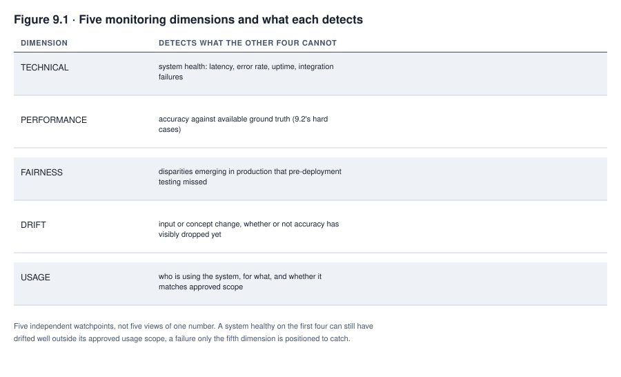
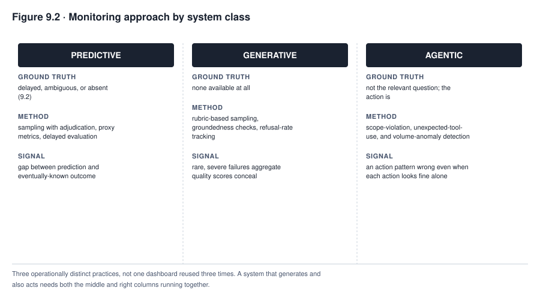
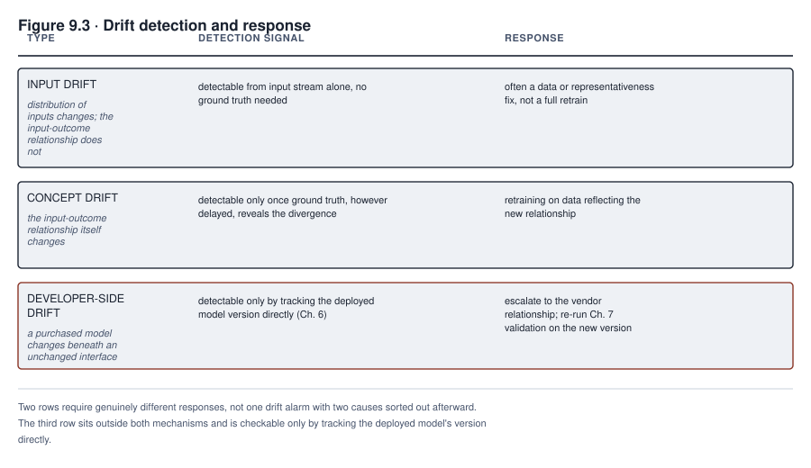

9. Operations and Monitoring
The gap between MEDASSIST’s academic-center validation and its community-hospital reality did not appear on any dashboard the day the model went live. It appeared, first, as a handful of nurses at one community hospital noticing that the model’s alerts seemed to be arriving later than their own clinical instinct would have flagged a patient. None of them had the standing or the aggregated data to raise this pattern as anything more than an impression. It appeared, months later, in a retrospective chart review that a new clinical informatics director happened to commission, comparing alert timing against eventual outcomes across the academic medical center and all six community hospitals. That comparison is where the pattern first became a number, not a feeling. In between those two moments, the model operated in production, generating a steady stream of alerts, most of them unremarkable. A small number of them were late or missing in exactly the way that mattered, for as long as nobody was watching the specific thing that would have shown it.
This chapter is about that interval. Once a system enters production, operation can continue long after its initial release, generating evidence that no pre-deployment test observed. Development, release, monitoring, response, and change can overlap instead of running as one clean handoff, particularly for a system updated continuously or retrained on a rolling basis. This chapter focuses on that continuing loop. It does not assume every system follows one linear lifecycle, or that every risk first appears after release. Some material harms surface earlier, during data creation, training, evaluation, or predeployment testing, and Chapters 5 through 7 have already shown several of them doing so.
What you will be able to do
- Design a monitoring program across at least five core dimensions, and state what each one is primarily positioned to detect
- Choose an approach to performance monitoring when ground truth is delayed, ambiguous, or entirely absent
- Monitor a generative system that has no ground truth at all, and a system that acts, not only outputs
- Recognize automation bias from its operational signals, not from a reviewer’s stated intentions
- Specify what a post-market monitoring plan must contain as a documented artifact, not merely describe as an activity
9.1 Five monitoring dimensions
A monitoring program built around a single number, typically accuracy or its nearest proxy, will miss most of what actually goes wrong in production. Different failure modes surface through different signals, and a dimension nobody is watching is a failure mode nobody will catch until it has already caused harm.
Technical monitoring watches whether the system itself is functioning, tracking latency, error rates, uptime, and integration failures with the systems around it. This is the dimension most operations teams already track well, because it resembles conventional software monitoring and produces alerts through tools that predate this book’s subject matter entirely. Performance monitoring watches whether the system’s predictions, generations, or actions remain accurate against whatever ground truth is available, a dimension section 9.2 shows is harder than it sounds for exactly the systems this book cares most about. Fairness monitoring watches whether disparities emerge across groups in production that pre-deployment testing did not reveal, because a population in production drifts from the population tested well before its aggregate accuracy visibly degrades. Drift monitoring watches whether the statistical relationship between inputs and outputs is changing, whether or not that change has yet produced a measurable accuracy drop. Usage monitoring watches how the system is actually being used, by whom, for what, and whether that usage matches the scope it was deployed and approved for. It catches the scope creep Chapter 8 named as context alignment’s central risk after the fact, in production, instead of only before deployment.
These five are a minimum view, the dimensions most monitoring programs should start with, not an exhaustive taxonomy, and they overlap instead of sitting in perfectly separate lanes. A security incident can show up first as an action-volume anomaly, and a supplier’s silent model change, covered in section 9.6, touches both drift and technical monitoring at once. A fuller program also names human workflow and oversight (developed in section 9.8 as its own monitoring target, even though it is not one of the five headline dimensions here) and security and privacy monitoring specific to what the system newly exposes. It also names change and supply-chain monitoring, tracking model, configuration, and vendor changes as their own signal, and impact or complaint signals from the people affected by the system’s decisions. Wherever one of these does not get its own dimension in a given program, the plan should say explicitly which of the five it is being tracked under rather than leaving it uncovered by omission. Every dimension, whichever list it is drawn from, needs a response loop, a defined path from a triggered threshold to triage, corrective action, revalidation, a deployment restriction, incident response, or a governance review. A dimension that is watched but produces no defined next action is not actually being monitored, only observed.

Figure 9.1 sets out five watchpoints that overlap, not five fully independent views of the same underlying number, and functions as a minimum program instead of a complete one. A system can be technically healthy, performing accurately, and fair by every disaggregated check, while its usage has drifted well outside the scope it was approved for. That is a failure usage monitoring is well positioned to catch and the others are not built to. A monitoring program that collapses all five into “is the model still accurate” has narrowed a multi-dimensional watch to one dimension and will be surprised by whichever of the others moves first. A program that stops at these five without asking where oversight, security, privacy, and supply-chain risk are being watched has the same blind spot in a different place.
9.2 Ground truth problems
Performance monitoring assumes access to ground truth, the actual outcome a prediction was trying to anticipate, and this assumption fails in four distinct ways that recur across the systems this book follows, each requiring a different workaround instead of one generic fix.
Delayed truth is the mildest version. The true outcome exists and will eventually be known, but not soon enough to inform a timely monitoring signal. A credit model’s ground truth, whether a loan was actually repaid, arrives over the life of the loan, months or years after the decision. This means FAIRLEND’s monitoring cannot wait for full ground truth before acting on early warning signs and has to rely on earlier proxy signals, delinquency at ninety days standing in for eventual default, while remaining explicit that the proxy is not the outcome itself.
Ambiguous truth is harder. The outcome exists and is knowable in principle, but reasonable evaluators disagree about what it actually was. Content moderation decisions carry this problem natively, since whether a specific post violated a policy is frequently a judgment call rather than a fact. A monitoring program built as though moderation ground truth were objective will treat evaluator disagreement as system error instead of as the genuine ambiguity it is.
Absent truth is close to MEDASSIST’s problem but not quite identical to it. When an intervention succeeds, the outcome it was meant to prevent never occurs, leaving no trace to check the prediction against. A sepsis alert that leads to early treatment, followed by a patient who does not develop septic shock, produces no confirmed case of the deterioration the alert predicted. A monitoring program cannot simply compare predictions to outcomes when a correct, well-acted-upon prediction erases the very evidence that would have confirmed it.
Intervention-affected truth is the hardest version, and it is MEDASSIST’s actual problem stated precisely. The truth is not merely absent; it is unobservable in principle for the specific patient once the intervention has been taken, because treating the patient changes what outcome gets observed. The untreated counterfactual, what would have happened to this patient without early treatment, is not a number retrospective chart review can look up; it is a quantity that was never generated at all. Recovering a usable signal here means trial design where it is ethical and feasible, phased or randomized implementation that creates a comparison group, or causal-inference methods that model the counterfactual under stated assumptions. It can also mean matched comparisons against patients who did not receive the intervention, or careful process measures that evaluate whether the intervention was warranted and well executed instead of trying to score its outcome directly. Every one of these methods carries its own assumptions, and none of them reconstructs the individual counterfactual outcome for a specific treated patient with certainty. Instead, they estimate a population-level effect or evaluate the process, and a monitoring program has to say which of those two it is actually doing rather than presenting either as a direct confirmation of the original prediction.
Four approaches recur across these problems, each with its own honest limitation. Sampling with human adjudication draws a manageable subset of cases for expert review, substituting a slower, more expensive, but more reliable judgment for the ground truth that is not otherwise available. The cost is covering only a sample instead of the full population, and, for the intervention-affected case, adjudicating the process and the available evidence rather than a counterfactual nobody can observe. Proxy metrics substitute an earlier or more available signal for the true outcome, useful precisely because they are available sooner. That substitution requires the proxy’s known limitations to be stated alongside every number it produces, instead of treated as equivalent to the outcome it stands in for. Delayed evaluation simply waits for ground truth to mature before drawing a conclusion, sacrificing timeliness for reliability, appropriate where a wrong early signal would cost more than a late correct one. The fourth approach, causal and comparison-based methods, is specific to the intervention-affected case. It includes matched comparisons, phased or randomized rollouts, and causal-inference techniques. They answer a population-level question about whether the intervention helps on average, rather than a patient-level question about what would have happened to any one person. MEDASSIST’s community hospital gap was, in the end, only detectable through a version of the first approach, a retrospective chart review adjudicating a sample of cases by hand against the available process evidence. No proxy metric and no wait for later data could substitute for actually examining what happened to specific patients whose deterioration the model should have caught.
9.3 Monitoring generative output
A generative system compounds the ground truth problem instead of escaping it entirely. It is not accurate to say a generative system has no ground truth at all. A generation can still be checked against source documents it was supposed to be grounded in, a citation it claims to support a fact, an executable test it should pass, or a task outcome a user or a downstream process can confirm. What is true is that a single, universally correct output to match against is rarely available the way it is for a classifier. Monitoring has to shift from comparison against one correct answer to a family of narrower, partial, and task-dependent checks that in combination cover more of the output than any one of them alone.
Rubric-based sampling extends Chapter 7’s evaluation discipline into production, drawing a periodic sample of real outputs and grading them against the same kind of rubric a pre-deployment evaluation used. It catches drift in quality that a static pre-launch evaluation cannot see, because production inputs are not the evaluation set. Groundedness checking, specific to a retrieval-augmented system, verifies whether a generated claim is actually supported by the retrieved source material it was meant to be grounded in, catching the specific failure where a system fabricates a plausible-sounding elaboration beyond what its own sources actually support. Refusal and over-refusal rates track both directions of a different failure. A rising refusal rate can signal the system declining to help with legitimate requests it should be handling, while a falling refusal rate on requests that should be declined signals the opposite failure, and watching only one direction misses the other entirely. User-reported failures, however imperfect a signal on their own, catch categories of failure that no automated check was designed to look for, provided the reporting channel is easy enough to use that a frustrated user actually uses it instead of simply giving up.
This list is a starting set, not the full range a production generative system needs watched. A fuller monitoring coverage map adds factuality checks against whatever sources are actually available, citation validity, privacy leakage in generated output, harmful content, and prompt injection attempts and whether they succeeded. It also adds retrieval poisoning in the corpus a system draws from, latency and cost, rates of users correcting or appealing an output, and task success where a downstream outcome can be observed at all. Building the map means working from each system capability and risk to a specific signal, the data source that signal comes from, a sampling plan, a threshold, a named owner, and a defined response. It also means stating explicitly the blind spot that signal does not cover, instead of adding checks piecemeal until the list feels long enough. An aggregate check can miss the failures that matter most. The sampling plan should deliberately oversample the categories most likely to contain one, instead of drawing a uniform random sample that dilutes them below the level an average can detect.
The reason aggregate quality metrics conceal exactly the failures that matter is structural, not incidental. A metric like average output quality, or average groundedness score, is dominated by the large volume of ordinary, unremarkable outputs a generative system produces. The failures a governance function actually needs to catch are rare and severe, not common and mild, a single fabricated clinical fact buried inside thousands of accurate summaries. Averaging across a population where failures are rare produces a number that looks reassuring precisely because it is computed the way it was. A monitoring program relying on an aggregate average has built a metric structurally blind to the tail it most needs to see.
9.4 Monitoring agent actions
An agentic system’s unit of monitoring is the action it took, not the output it produced, a distinction Chapter 7 already established for testing. Operational monitoring has to carry that distinction forward into production, because a system that acts generates a different kind of record than one that only outputs.
An agentic system’s unit of monitoring being the action instead of the output does not mean ground truth stops mattering. It means ground truth is one of several things that now have to be checked alongside the action itself, because a wrong result or a harmful effect can still occur even when every action taken was individually authorized and within scope. Each action needs to be monitored along at least five questions. What was actually done? Under whose authority was it done? What outcome did it produce, and was that outcome correct or desired? What effect did it have? And did it fall inside the permission scope the system was granted, with a check against the postconditions the action was supposed to satisfy? This sits deliberately in this chapter rather than in Chapter 12’s design of permissions or Chapter 15’s log design. Monitoring is the operational surveillance layer that watches what a designed system actually does once it is running, distinct from designing the permission boundary in the first place or designing the log format that records the action.
Scope violation detection watches for an action taken outside the permission boundary the system was granted, the operational check that catches a permission design that looked sufficient on paper but proves too permissive, or too ambiguous, once real traffic exercises it. Unexpected tool use detection watches for a pattern of tool calls that, while individually within scope, forms a combination or sequence nobody anticipated when the scope was granted. Action volume anomaly detection watches for a rate of activity that departs sharply from the pattern the system’s approved use case would predict. That is exactly the signal that caught TALENTSCREEN’s scheduling agent in this chapter’s case in focus, well before anyone had traced the anomaly to its specific cause.
None of these three substitutes for preserving a full trace of what the agent actually did, across the model’s own messages, its tool calls and their results, its internal state, the permissions active at the time, the actions taken, and their outcomes. A scope check or a volume count computed after the trace has been discarded cannot be re-examined once a new question arises about what happened. Averaging across an agent’s action volume, the way section 9.3 warns against for generative output, hides the same kind of rare, severe failure here. A monitoring program should instead sample and directly review the categories of action most likely to contain a serious failure. These include duplicate or irreversible actions, actions taken under an unusually broad grant of access, and actions following an unusual tool-output pattern, instead of trusting that a rare failure will show up in an aggregate rate computed across everything the agent does.

Read Figure 9.2 as three operationally distinct monitoring practices, echoing the testing distinction Chapter 7 drew and carrying it into production, and as three columns a real deployment can draw from more than one of at once. A predictive system’s monitoring contends with ground truth that is delayed, selectively observed, contested, a proxy for what is actually meant, or affected by the intervention itself, and leans on sampling, proxies, delayed evaluation, or causal comparison to match. A generative system’s monitoring rarely has one universally correct output to check against, and substitutes source checks, executable tests, rubric sampling, groundedness checks, human review, and outcome measures as the task allows. An agentic system’s monitoring watches goals, plans, tool calls, permissions, state, actions, side effects, postconditions, outcomes, and recovery together, not actions to the exclusion of whether the result was actually correct. A team that builds one dashboard modeled on the predictive column and points it at a system that also generates or acts is watching only a fraction of what that system is actually doing in production. A team whose system combines more than one class needs more than one column’s monitoring running at once.
9.5 Fairness monitoring
Fairness testing in Chapter 7 checked a snapshot, the model as it existed at the moment of testing, against the population available at that moment. Production is not a snapshot. A disparity that pre-deployment testing did not reveal, because the tested population did not yet exhibit it, can emerge months into operation as the deployment population itself shifts or as edge cases accumulate that a finite test set never sampled densely enough to catch.
Fairness monitoring is not simply Chapter 7’s disaggregated analysis rerun on a schedule. A monitoring program should be built on the precise fairness definitions, the score-versus-decision distinction, and the impossibility conditions Chapter 7 states. Beyond that, production raises questions a one-time pre-deployment test does not have to answer. What denominator is each rate computed against, and over what outcome window? How is the resulting number’s uncertainty treated, given a production sample that may be smaller than a curated test set? What minimum sample size is required before a computed disparity is trusted at all? Is the analysis run at the intersection of more than one protected characteristic, rather than one at a time? How is a delayed outcome handled without simply waiting silently for it? And how are feedback effects, complaints, and human overrides of the system’s own recommendations factored into what the numbers mean? A production fairness monitoring plan states the favorable outcome and the positive class it is measuring against, the metric and the reason it was chosen, and the groups being compared. It also states the denominator, the observation window, the minimum sample size and how uncertainty below it is treated, whether and how intersectional groups are analyzed, and how delayed outcomes are handled. Finally, it states the alert and investigation thresholds, the named owner, whether legal review is required before a threshold breach becomes public or actionable, the mitigation options available, and the schedule on which the whole plan itself is revalidated. Setting the alert threshold in advance matters for the same reason a red team’s disposition process mattered in Chapter 7. A threshold decided after seeing a concerning number is vulnerable to being rationalized away by whoever would rather not act on it, while a threshold fixed before any concerning number appeared has no such vulnerability built in.
9.6 Drift
Drift is change in the statistical relationship a model was trained to capture, and distinguishing input drift from concept drift is a useful starting diagnosis. Treating that diagnosis as though it dictated a single response, a data fix for one and a retrain for the other, oversimplifies a decision that needs its own process.
Input drift is a change in the distribution of the data a model receives, without any change in the underlying relationship between that data and the correct outcome. A lending model that starts receiving applications with a different income distribution than its training data, without the actual relationship between income and repayment having changed, is experiencing input drift. But not every input distribution change is worth acting on the same way. It can be harmless, if the model’s learned relationship holds fine across the new distribution too, or harmful, if it does not. It can also be temporary, correcting itself without intervention; a symptom of a pipeline fault upstream of the model rather than a real change in the population at all; or a genuine, lasting signal that the population being served has changed. A representativeness fix is often the right response, but retraining on a distribution that turns out to be a temporary pipeline artifact can entrench a problem, not solve it. That is why distinguishing these cases is part of the work, not a detail to skip past on the way to a fix.
Concept drift is a change in the underlying relationship itself. The same input now predicts a different outcome than it used to, which no amount of representative sampling will fix, because the thing the model learned is no longer true. A fraud model’s concept drift, as fraud techniques evolve past whatever pattern the model learned to recognize, is a case where retraining on data reflecting the new relationship is usually necessary. But even here retraining is one option among several. Recalibrating the existing model, adding a new feature that captures what changed, and adjusting a decision threshold or rule are all responses a genuine concept change can call for. So are restricting the system’s use while the relationship is investigated, rolling back to a prior version, or retiring the system, depending on what changed and how much.
Detecting drift and deciding what to do about it are two different steps, and stating them as one two-way fork, input drift detected immediately versus concept drift detectable only once ground truth arrives, overstates what either check can promise on its own. An input change can also take time to accumulate to a detectable level, and a concept change can sometimes be inferred earlier from a leading indicator before full ground truth confirms it. A more accurate process has five stages. Detect a candidate change with enough data, and an explicit assessment of the statistical uncertainty or power behind the detection, to avoid reacting to noise. Diagnose the source. It might be an input distribution change, a change in the actual outcome relationship, a change in how labels are produced, a pipeline fault, a policy or environment change, or a model version change. It might also be a prompt change, a change in the retrieval corpus, or a configuration change, since these call for different owners and different fixes even when the detected symptom looks similar. Assess materiality against performance, fairness, safety, and the system’s actual use, because not every detected change is worth acting on. Choose the intervention, matched to the diagnosis instead of defaulted to retraining just because that is the response most readily associated with “drift”. Options include recalibration, data repair, retraining, a threshold or rule change, escalation to a vendor, rollback, restriction, or retirement. Validate the intervention actually worked, monitor for recurrence, and preserve the decision record.
A source specific to the selection path this book has returned to since Chapter 6 belongs in the diagnosis stage instead of treated as a third category of data drift. For a purchased model, an apparent shift can originate not in the deploying organization’s own population at all but in the supplier updating the model or service underneath the deploying organization’s unchanged interface. This is a model-version or configuration change, not a new kind of drift, and it needs to be checked as its own diagnosis rather than folded into “developer-side drift” as though it belonged in the same category as an actual population shift. An organization that monitors only its own inputs and outputs, without also tracking which model version is actually running behind its API calls, can misdiagnose a supplier-side change as its own population shifting, when nothing about its population changed at all.

Read Figure 9.3 as a five-stage process a detected change moves through, not a two-row lookup table matching input-versus-concept to data-fix-versus-retrain. Detection flags a candidate change with a stated confidence, not a certainty. Diagnosis is where the real branching happens, and it includes a possibility the two-row version omitted entirely. What looks like a population shift can be a supplier silently changing the model or service behind an otherwise unchanged interface, a version or configuration change to check directly rather than a third kind of drift. Materiality assessment and the choice of intervention follow the diagnosis instead of a fixed input-versus-concept rule, and validation closes the loop by confirming the intervention actually worked instead of assuming it did because it was applied.
9.7 Post-market monitoring plans
A post-market monitoring plan, under the EU AI Act and in the broader governance practice this book teaches, is a documented artifact with defined contents, not a description of an activity an organization asserts it performs. Which organization holds which duty depends on a role the plan has to state before it states anything else. Article 72 places the post-market monitoring system and plan duty on the provider of a high-risk system, who must actively and systematically collect, document, and analyze relevant data across the system’s lifetime, including its interactions with other AI systems where relevant. Article 26 places a separate, narrower set of duties on the deployer. These include operating the system according to the provider’s instructions, assigning competent human oversight with real authority and support, monitoring its operation, suspending use in specified risk circumstances, informing the provider or relevant authorities where required, and retaining logs the deployer controls. Article 73 adds serious-incident reporting on top of both. An organization writing its own monitoring plan has to say first which of these roles it holds, provider, deployer, or both for different parts of the same system, because the contents required differ by role. A provider’s plan documents continuous compliance analysis across the system’s lifetime, drawing on deployer-reported data and other sources, its interaction with other AI systems, links to technical documentation and serious-incident reporting, and corrective and preventive action. A deployer’s plan documents operating within instructions, oversight assignment, its own monitoring, and its own reporting and log-retention obligations. Article 72 also called for a Commission implementing act specifying a template for the plan, due by February 2, 2026. This book’s most recent check of that template’s publication status was performed 2026-09-12 and should be re-verified against the current official text before this section is relied on, since a moving regulatory deadline can change between that check and any later reading.
Beyond the legal roles, the plan itself needs the same defined contents regardless of which role is writing it. It must name which of section 9.1’s dimensions are being monitored, by what method, on what schedule, with what threshold triggering escalation, and who is accountable for reviewing the results. A plan that states an organization “monitors performance regularly” has not documented a post-market monitoring plan; it has documented an intention. The two are not interchangeable, for either compliance or for the more basic governance purpose of actually catching what section 9.1’s dimensions exist to catch.
A complete plan still only establishes design, not operation, and the two are a different layer of evidence, not one a well-written plan can stand in for. An auditor reading the plan alone can determine what the organization committed to monitor, by what method, and on what schedule; it cannot determine whether the collection, review, escalation, and response the plan describes actually happened. That second layer needs its own operating record, the data actually collected, the analyses actually performed, the alerts actually reviewed and by whom, the decisions actually made, the actions actually completed, and any exception left unresolved. A plan that has never generated that operating record is design without operation, whatever its contents promise.
9.8 Human oversight in practice
Chapter 8 named oversight readiness as a dimension of organizational readiness; this section is where a reviewer’s oversight either functions or collapses into a formality, and the collapse has specific, detectable signals that a governance function should be watching for as its own monitoring target.
Meaningful oversight exists when a human reviewer has the time, the authority, and the actual information needed to catch a wrong output and act on that judgment. Nominal oversight exists when a human sits in the review position but functions, in practice, as a rubber stamp, because the volume, the time pressure, or the framing of the task has made genuine review impractical regardless of the reviewer’s intentions or competence. The distinction matters because an organization can point to a human-in-the-loop control that satisfies a compliance checklist while that control has quietly stopped doing anything a checklist would recognize as oversight.
Automation bias, introduced in Chapter 1 as the tendency to over-trust an automated recommendation, produces detectable operational signals instead of remaining a purely psychological phenomenon invisible to monitoring. Each signal is an investigation trigger, not proof of the underlying failure on its own, because every one of them has an innocent explanation alongside the concerning one. An approval rate approaching unity means a reviewer agrees with the system’s recommendation in nearly every case. That pattern is at least as consistent with a reviewer who has stopped exercising independent judgment as it is with a system that has become extraordinarily accurate. It is equally consistent with an easy population of cases, a policy design that narrows the reviewer’s real discretion, batching effects, or a genuinely appropriate degree of automation for the task. Review times too short to plausibly support the evaluation the role requires are a second trigger, directly measurable from timestamps a system already logs. Absence of override, a reviewer who has never once departed from the system’s recommendation across a meaningful volume of cases, is a third. None of the three should be treated as a finding until it has actually been validated. That validation runs against a blinded sample where the reviewer does not know which cases are being checked, and against an independent human decision on the same cases, controlling for case complexity and time on task. It also means checking the quality of whatever overrides do occur rather than only counting them, and accounting for outcomes that are themselves delayed. Where the pattern persists, it further means interviews or direct observation of the reviewer’s actual workload, alert burden, and whether the reviewer had the authority and the information the role assumes. A governance function that treats an approval rate approaching unity as a finding without running this validation has replaced one unverified assumption, that the reviewer is engaged, with another, that the reviewer is not.
MEDASSIST’s alert fatigue, introduced in Chapter 1 as a governance concept, is related to automation bias but is not simply automation bias running in the opposite direction; the two are distinct mechanisms that happen to produce a mirror-shaped operational signature. Automation bias is over-trusting a system’s judgment. Alert fatigue is a rational-seeming adaptation to volume and workload that degrades attention regardless of how much the reviewer trusts the system. A nurse managing eleven patients and a high volume of alerts, many of them low-value, can learn to dismiss alerts quickly for reasons that have nothing to do with how much she trusts the alert. The real driver is how many of them she has to process. The detectable signal for alert fatigue is not an approval rate approaching unity but a dismissal rate approaching it, alongside review times too short to have actually evaluated the alert’s content. It needs the same validation discipline as automation bias before being treated as a finding, not a hypothesis. Once validated, the two mechanisms call for different interventions. Automation bias calls for retraining or restructured incentives; alert fatigue calls for workload and alert-volume management. But the underlying operational discipline is the same. A governance function that monitors dismissal and override rates, review timing, and the actual content of a validated sample of reviewed decisions can catch either failure mode before it produces the specific missed case that first makes it visible. The alternative is waiting, as Northfield did, for a retrospective review to find it after the harm has already occurred.
Case in focus: two signals a dashboard could have caught earlier
MEDASSIST and TALENTSCREEN · Hypothetical, following the running cases
The retrospective chart review that eventually surfaced MEDASSIST’s community hospital gap was not the first opportunity to catch it; it was simply the first time anyone looked with the right method. Section 9.2’s absent-truth problem meant that no simple comparison of predictions to confirmed outcomes could have caught the gap directly, since a prevented deterioration leaves no confirmed case to compare against. But section 9.8’s automation bias signals, alert dismissal rates and review timing at each community hospital, had been quietly diverging from the academic center’s pattern for months before anyone examined them. Nursing staff at the community hospitals, receiving alerts calibrated to a population and workflow the model did not actually describe, were dismissing a higher proportion of alerts, faster, than staff at the academic center. A monitoring program watching dismissal rates by site would have flagged that pattern as worth investigating well before the retrospective review became necessary. Nobody was watching that specific signal, because the monitoring program in place tracked only the technical and aggregate-performance dimensions from section 9.1, not the human-oversight dimension section 9.8 develops. A program covering only two of five dimensions caught nothing, until the third dimension’s absence produced a harm large enough to trigger a review by other means entirely.
Calloway’s discovery of an anomaly in TALENTSCREEN’s scheduling agent followed a cleaner path, because the signal that caught it, action volume anomaly detection from section 9.4, was one the organization actually had in place. A routine review of the agent’s weekly scheduling volume showed a sharp, unexplained spike at one regional office, well outside the pattern the tool’s approved use case would predict. Investigation traced the spike to a configuration event the platform’s own access log had recorded but that nobody had reviewed until the volume anomaly prompted the look. A local hiring manager had granted the agent access to a broader calendar system than its approved permission scope covered, intending a convenience. The platform accepted the change without an alert comparing the new effective access against the approved scope. Every scheduling action the agent then took passed its own runtime permission check, because the broader access was, by that point, what the system believed the agent was allowed to use. Nothing about those individual actions, evaluated one at a time, would have looked wrong at all. Each one, in isolation, was a normal scheduling decision correctly executed under the access it had. The scope violation was real, and it was logged, but at the moment the access was expanded beyond what the deployment record approved, not at the moment any scheduling action ran. The action volume signal was what actually surfaced it, a week later, because nobody had built an alert on the configuration log itself. The anomaly was visible only in aggregate, which is the argument section 9.4 makes for monitoring actions as a population instead of only auditing them one at a time after a complaint arrives.
Both cases share the same lesson from opposite directions. MEDASSIST’s harm went undetected because a dimension of monitoring, human oversight, was never built into the program at all, while TALENTSCREEN’s anomaly was caught quickly because the corresponding dimension, action volume, was. A monitoring program is only as complete as the dimensions it actually covers, and the gap between five dimensions in principle and two or three in practice is exactly where harm accumulates unseen.
Summary
Operation is the longest phase of a system’s life and the one where most of this book’s risk actually materializes, and a monitoring program built around a single accuracy-like number will miss most of it. Five core dimensions, technical, performance, fairness, drift, and usage, are a minimum, not an exhaustive or mutually exclusive taxonomy, and a fuller program also names where human oversight, security and privacy, change and supply-chain, and complaint signals are being watched. A program that reduces everything to performance monitoring alone has narrowed its watch to one dimension without noticing it did so.
Ground truth can be delayed, ambiguous, absent, or affected by the very intervention being evaluated. Sampling with adjudication, proxy metrics with stated limitations, delayed evaluation, and causal or comparison-based methods are the approaches that recover a usable signal from each situation. MEDASSIST’s intervention-affected problem, an unobservable individual counterfactual rather than merely absent truth, is the hardest case this chapter names. Generative systems rarely have one universally correct output to check against, but that is not the same as having no ground truth at all. Source checks, executable tests, rubric-based sampling, groundedness checking, human review, and outcome measures each cover part of the gap. A fuller coverage map adds factuality, citation validity, privacy leakage, harmful content, prompt injection, retrieval poisoning, and user-correction signals, sampled to favor the rare, severe failures an aggregate average conceals. Agentic systems require monitoring goals, plans, tool calls, permissions, state, actions, side effects, postconditions, and outcomes together, not actions to the exclusion of whether the result was correct. That means watching for scope violations, unexpected tool combinations, and volume anomalies, while preserving full traces and directly sampling the categories most likely to contain a severe failure.
Fairness monitoring builds on Chapter 7’s method. It adds what production requires beyond a snapshot test, a stated denominator, observation window, minimum sample size, intersectional analysis, delayed-outcome handling, and named ownership, run against thresholds fixed before any concerning number appears. Drift detection and response is a five-stage process, detect, diagnose, assess materiality, decide the intervention, and validate, not a two-way lookup between input-drift-means-data-fix and concept-drift-means-retrain. A supplier silently changing a purchased model behind an unchanged interface is a version or configuration change to diagnose directly, not a third category of drift. A post-market monitoring plan is a documented artifact naming dimensions, methods, schedules, thresholds, and accountability, not an asserted activity. It has to state first whether the organization holds the EU AI Act’s provider duties, deployer duties, or both, since the required contents differ by role. Human oversight collapses from meaningful to nominal in detectable ways, an approval or dismissal rate approaching unity, review times too short to support genuine evaluation, and an absence of override. Each is an investigation trigger requiring validation, not a finding on its own, and alert fatigue is a related but distinct mechanism from automation bias rather than simply its mirror image.
Evidence carried forward. This chapter watches the constraints, residual risks, versions, and human workflow Chapter 8’s release record actually specified, instead of a generic checklist independent of what was decided. It is where a finding gets its first disposition, triage, corrective action, revalidation, a deployment restriction, an incident, or a decision to roll back or retire the system. Chapter 10 picks up from exactly that last disposition, incident response, when monitoring surfaces something that needs more than a routine correction.
Review questions
COMPREHENSION
Explain why
MEDASSIST’s ground truth problem, a prevented deterioration leaving no trace, cannot be solved by any of the three approaches in section 9.2 without modification, and describe what modification section 9.2’s case in focus actually used.Distinguish input drift from concept drift, and explain why a monitoring program that detects only the first will still miss certain failures.
APPLIED
Design a monitoring plan for a generative customer-support system with no ground truth available. Specify at least three of the methods from section 9.3 and what each is intended to catch.
A monitoring dashboard for an agentic system tracks only whether individual actions fall within the agent’s permission scope. Using section 9.4, identify what this dashboard would miss and specify the additional signal needed to catch it.
SPOT THE RISK
- A team reports that its human review process shows a 99 percent agreement rate between reviewers and the system’s recommendations, and treats this as evidence the system is highly accurate. Identify the alternative explanation section 9.8 requires the team to rule out, and describe how you would investigate which explanation is correct.
COMPARE AND DECIDE
- An organization detects input drift in a fraud-detection model’s incoming transaction data but has not yet observed any change in the model’s actual error rate. State the case for retraining immediately versus waiting for concept drift confirmation, and what you would need to know to decide between them.
RUNNING CASE
TALENTSCREENUsing the case in focus, explain why the action volume anomaly was detectable even though no single scheduling action looked wrong in isolation, and specify what change to Calloway’s permission-scope monitoring would have caught the underlying cause sooner.
Monitoring tells an organization something is wrong. It does not, by itself, fix anything. The next chapter turns to what happens after that moment, how a response is classified, staffed, and executed, and what reporting obligations attach and on what timeline. It also turns to how a root cause analysis reaches the systemic factors this chapter’s own case in focus already illustrates, instead of stopping at the first proximate cause a rushed investigation finds convenient to blame.